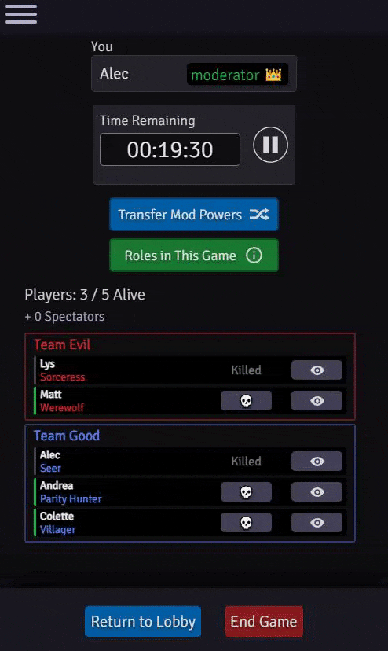
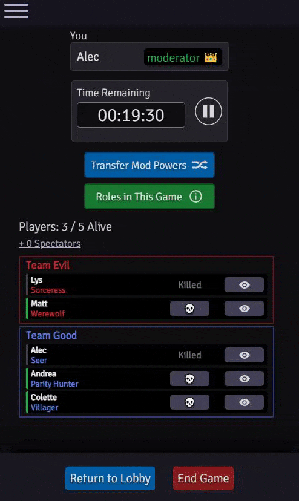

Purpose of the Application
This app serves as a means of running games in a social setting where a traditional
running of the game is hindered. This might be when people are meeting virtually, and thus roles can't be handed
out in-person, or when people are in-person but don't have Werewolf cards with them. You can use a deck of regular
playing cards, but it can be difficult for players to remember which card signifies which role, especially if
you want to build a crazy game with many different roles. Even when people are together and have cards, there's
information that would be great to centralize for everyone - a timer, role descriptions, and the in/out status of
players. This app attempts to provide the utilities necessary to run Werewolf with all the different roles you want,
wherever you can access the internet.
Creating a Game
Creating a game through the app has 3 main components:
You have two options for moderation during the game. If the moderator isn't playing, you can choose the dedicated moderator option. Dedicated Moderators are not dealt into the game. Once they start the game, they will know everyone's role. At that point, they can kill players, reveal players' roles to everyone else, transfer their moderator powers, play/pause the timer (if there is one), and end the game when team good or evil wins.
Similarly, you can also choose the temporary moderator option. You are dealt a role, and you have the same powers as the dedicated moderator, with the exception of game knowledge - you know the same information that a regular player does. When you remove the first player from the game (which can be yourself), they will automatically become the dedicated moderator, and the temporary moderator--if they are a different person--will become a killed player.
Dedicated moderators can transfer their moderator powers to a player that is out, or to a spectator. That way, if the current dedicated moderator has to leave, or simply does not want to moderate anymore, they can easily delegate.
There is a role box on this page that includes a list of default roles and a list of custom roles, which can be displayed by selecting the appropriate button within the box. If you want to add a certain role to the game, click the green plus, and one copy of it will be added to the "deck," which is the other box displaying a player count. Likewise, if you want to remove one copy of a given role, click the red minus button on the role in the deck box.
Here I add 3 villagers to the game, and then remove them:
You can add, edit, and remove custom roles. You can also import and export them via a formatted text file. Click the hamburger menu on the role box to see the import/export options. Here I create a new custom role and observe it in the list:

If you don't fill in these fields, the game will be untimed. If you do, you can use a time between 1 minute and 5 hours. The timer can be played and paused by the current moderator. Importantly, when the timer expires, nothing automatically happens. Users will be notified that it has expired, and the timer will display 0s, but the game will not end. Moderators always choose to end or restart the game manually.
Step One: Choosing method of moderation
You have two options for moderation during the game. If the moderator isn't playing, you can choose the dedicated moderator option. Dedicated Moderators are not dealt into the game. Once they start the game, they will know everyone's role. At that point, they can kill players, reveal players' roles to everyone else, transfer their moderator powers, play/pause the timer (if there is one), and end the game when team good or evil wins.
Similarly, you can also choose the temporary moderator option. You are dealt a role, and you have the same powers as the dedicated moderator, with the exception of game knowledge - you know the same information that a regular player does. When you remove the first player from the game (which can be yourself), they will automatically become the dedicated moderator, and the temporary moderator--if they are a different person--will become a killed player.
Dedicated moderators can transfer their moderator powers to a player that is out, or to a spectator. That way, if the current dedicated moderator has to leave, or simply does not want to moderate anymore, they can easily delegate.
Step Two: Build your deck
There is a role box on this page that includes a list of default roles and a list of custom roles, which can be displayed by selecting the appropriate button within the box. If you want to add a certain role to the game, click the green plus, and one copy of it will be added to the "deck," which is the other box displaying a player count. Likewise, if you want to remove one copy of a given role, click the red minus button on the role in the deck box.
Here I add 3 villagers to the game, and then remove them:
You can add, edit, and remove custom roles. You can also import and export them via a formatted text file. Click the hamburger menu on the role box to see the import/export options. Here I create a new custom role and observe it in the list:
Step Three: Set an optional timer
If you don't fill in these fields, the game will be untimed. If you do, you can use a time between 1 minute and 5 hours. The timer can be played and paused by the current moderator. Importantly, when the timer expires, nothing automatically happens. Users will be notified that it has expired, and the timer will display 0s, but the game will not end. Moderators always choose to end or restart the game manually.
Being the Moderator
This is an example of what a dedicated moderator sees during the game:

They can see who is on which team and who has each role. The moderator kills and reveals players. They are separate actions - note the two buttons for each player. So if you want to play a game where people's roles are not revealed during the day or night, you can use the "kill" option but not the reveal option. Or, if you happen to have a role that reveals but is not immediately removed from the game, you can use the "reveal" option but not the "kill" option. You of course don't have to utilize either of these options. If you just want to use the app to deal cards, you are free to do that.
The moderator also has permissions to play and pause the timer, and can end the game (revealing everyone's role) or restart the game, which will reset the timer, give everyone new roles, and reset the status of anyone that was killed or revealed.
The temporary moderator view looks like the below image. They have much the same abilities as a dedicated moderator, except they don't know role or alignment information and cannot transfer their powers. Their powers will be transferred automatically to the first person they remove from the game (which can be themselves).

You can transfer your moderator abilities to anyone that has been removed from the game, or to anyone that happens to be spectating. Here we select a spectator and transfer our powers to them, and then we inherit the view of what we were before, which is a player that was removed from the game:

They can see who is on which team and who has each role. The moderator kills and reveals players. They are separate actions - note the two buttons for each player. So if you want to play a game where people's roles are not revealed during the day or night, you can use the "kill" option but not the reveal option. Or, if you happen to have a role that reveals but is not immediately removed from the game, you can use the "reveal" option but not the "kill" option. You of course don't have to utilize either of these options. If you just want to use the app to deal cards, you are free to do that.
The moderator also has permissions to play and pause the timer, and can end the game (revealing everyone's role) or restart the game, which will reset the timer, give everyone new roles, and reset the status of anyone that was killed or revealed.
The temporary moderator view looks like the below image. They have much the same abilities as a dedicated moderator, except they don't know role or alignment information and cannot transfer their powers. Their powers will be transferred automatically to the first person they remove from the game (which can be themselves).
Transferring your moderator powers
You can transfer your moderator abilities to anyone that has been removed from the game, or to anyone that happens to be spectating. Here we select a spectator and transfer our powers to them, and then we inherit the view of what we were before, which is a player that was removed from the game:

Being a Player
This is an example of what a player is seeing. The timer is running, and they view their
role by double-clicking it:
There are three main things - the timer, your role card and the player list. Players can view the timer, but only the current moderator can play and pause it. Your role card starts flipped over - this is useful if you are in-person and don't want someone else accidentally seeing your role as it is dealt. You can view your role at any time by double-clicking/double-tapping it. Requiring a double-click guards against the possibility of accidentally flipping your role when tapping other things. Within the player list, you can see who is alive or dead and who has had their role revealed. There is also a role info button that, when pressed, displays all the different roles in the current game, including their descriptions and alignment (good/evil).
There are three main things - the timer, your role card and the player list. Players can view the timer, but only the current moderator can play and pause it. Your role card starts flipped over - this is useful if you are in-person and don't want someone else accidentally seeing your role as it is dealt. You can view your role at any time by double-clicking/double-tapping it. Requiring a double-click guards against the possibility of accidentally flipping your role when tapping other things. Within the player list, you can see who is alive or dead and who has had their role revealed. There is also a role info button that, when pressed, displays all the different roles in the current game, including their descriptions and alignment (good/evil).